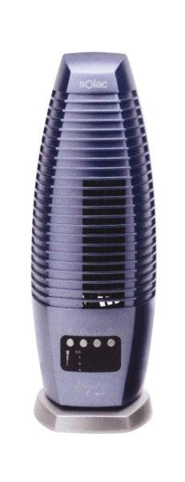

|
 | Amúgy ezen a héten hogy írják
helyesen, ventilátor vagy ventillátor? Nekem még körmös meg elégtelen járt az egy L-es verzióért. Tudjátok,
mióta van ez a marhaság, hogy évente változik a helyesírás? 1989 körül a Hitgyüli teleplakátolta a
várost valami rendezvénye kapcsán, mely plakátokon a következõ szó állt: HIDJETEK! Magyartanárom
sírva emlegette fel ezt a következõ nyelvtanórán, és csak azért nem követelt faszkorbácsot, mert
mégiscsak hölgy volt, mi meg kiskorúak. Grétsy László is megjegyezte, hogy ezért tényleg kijárna a
faszkorbács, de õ is csak befelé, elvégre akkoriban még nem beszéltek így a tévében, mert tudták,
hogy kiskorúak is nézik. (Szegény Hofi meg is jegyezte, hogy a tévében manapság már nem csatorna van, hanem
kanális, mert a csatornában nincs ennyi szar. De az õ elõadásait nem látogatták kiskorúak.)
Egyszóval ott díszelgett a rengeteg HIDJETEK, mígnem a tévében meg nem jelent egy okoskodó manusz az
MTA-tól, aki puszta létezésével legalizálta a faszkorbács mindenféle említését és használatát, és
nagy okoskodva lefektette azt az alaptételt, hogy kérem, a nyelv, az fejlõdik, és ha így akarják
írni, akkor így lesz. Bele is került a következõ helyesírási szótárba a hidjetek, holott addig csak
higgyetek formában volt helyes. Azóta van ez a buzulás a
helyesírással. Amúgy szerintem hejesírás, tessék felírni a jövõ évi szótárba.
A ventillátor (csakazértis) a
konyha padlóján hever. Nem ez a rendeltetésszerû használati módja, de mielõtt a rejtélyt feloldanám,
jegyezzük meg a gyártója nevét: SOLAC. A típusa pedig: E-Air. Na, ilyet ne vegyetek, mert nálatok is
a padlón fog kikötni, aztán a szemétben, a jövõ generációk nagy-nagy örömére, mint mûanyagszemét,
mert ezek a kampós orrú gazemberek azt hiszik, hogy ha két év alatt szétrohad, amit drága pénzen rám
sóztak, akkor egy drogfüggõt megszégyenítõen reszketve fogok szaladni az újért, mert ventillátor
nélkül élni nem lehet. A két év garancia ez esetben szó szerint azt jelentette, hogy ennek lejárta
után a gépezet se elõre, se hátra nem mozdul többé, merev mûanyagdarabbá lényegül, és bár
vezérlõpaneljén még fel-felvillannak néha a LED-ek, de ez csak a röhögés megfelelõje a
ventillátoroknál, a készülék ugyanis hûvös levegõt többé nem szolgáltat.
Szemrevételezés után
kiderült, hogy a hörgõ-zörgõ erõlködés és lekapcsolás oka az, hogy a képen látható szerkezet az
elmúlt két nyár során teleszívta magát porral. Mi sem egyszerûbb: ki kell tisztítani. Fogtam hát egy
csavarhúzót, és nekiálltam leszedni a burkolatát.
Igen ám, de a négy csavar közül csak kettõ
volt rendes Philips-csavar, a másik kettõ speciális csavarhúzóval lett betekerve, ami természetesen
a Föld ezen féltekéjén nincs. A smucigok még ezen is spóroltak, elég lesz oda kettõ, akkor se tudja
kinyitni a paraszt... Hát nem is sikerült. Egy spakliból megpróbáltam megfelelõ csavarhúzót
eszkábálni egy fûrész és egy reszelõ segítségével, ám a csavar ráadásul úgy be volt húzva, hogy meg
se moccant, csak a rögtönzött szerszámot gyaláztam szét rajta.
Nem olyan nagy dolog egyébként
ez a csavar. Közönséges lapos fejû csavarhúzó nyitná, aminek a közepébe egy kis mélyedést reszeltek.
A csavar hornya ugyanis középen megszakad. Tegye fel a kezét, akinek van ilyen csavarhúzója. Na
ugye. Tessék, hogy reszeljek bele egy csavarhúzóba, és kész? Igen, hogyne, amennyiben valaki hoz egy
gyémántreszelõt, a csavarhúzókat ugyanis szerszámacélból készítik, amit nem lehet csak úgy
összevissza reszelgetni. Egyébként igen, megpróbáltam.
No, hát ha hátulról nem nyílik, nézzük
meg az alját, mondottam, és leszedtem a szürke talpat, amin normális esetben jobbra-balra
forgolódik. Bent vastagon gépzsíros volt, de továbbjutni nem lehetett.
Végül fogtam a
fúrógépet, és szétgyaláztam a rohadék csavarokat. Igaz, most majd csak két csavar tartja a
burkolatot, de pont leszarom. S tudjátok, miért tapadt bele annyi kosz a szerkezetbe? Azért, mert a
drága jó Solac gyár mérnökei jó vastagon bekenték belülrõl is gépzsírral az egészet, minden
porcikáját, de még a lapátokat is. Na, hát így még szép, hogy telemegy dzsuvával. Vegyél újat, hülye
fogyasztó!
| | vissza a fõoldalra |  |
| 1 2 3 4 5 6 | |  | | | | | | | | | | | | | | | | | | | | 1 2 3 4 5 6 |  |
|


túraszervezõ
túra-rss
mi ez?

legjobbak
legolvasottabbak
tartalomjegyzék
rss feed

AboryM
Caesar
Count Grishnackh
cscsabi
eürdüngh
Feki
GyalogKakukk
Ishukone
Kadzseszka
LACI1993
Mini
Muska
Rommel
Segi
Takezó
tommylee
vikcee
|